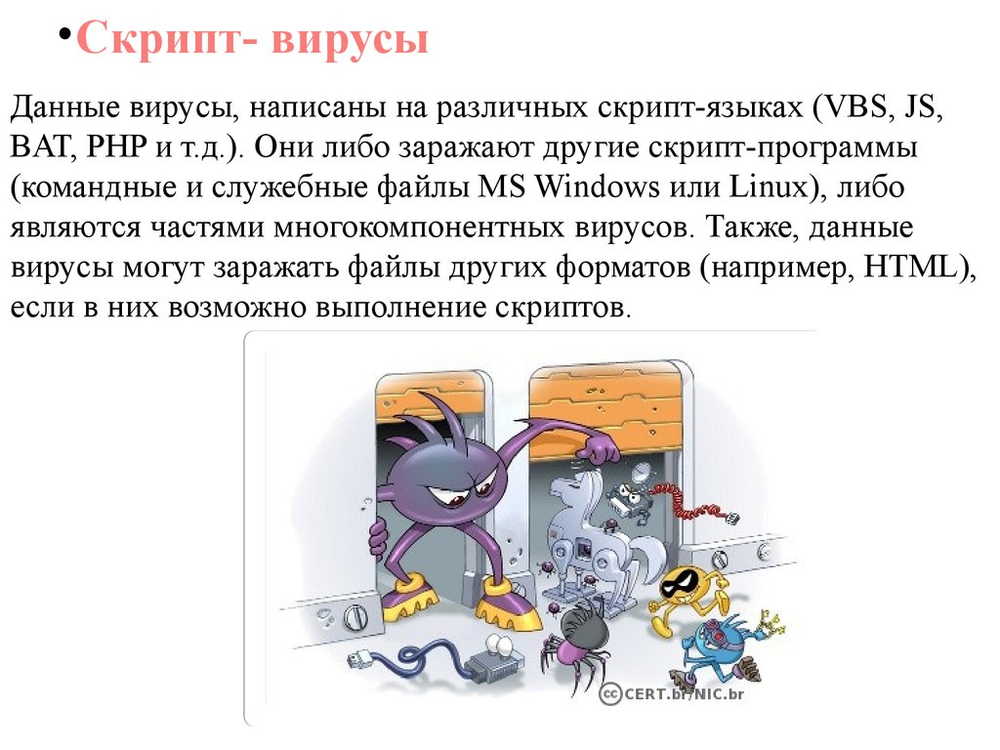

Скрипт-вирусы (Script virus) - вирусы, написанные на языках Visual Basic, Basic Script, Java Script. На компьютер пользователя такие вирусы, чаще всего, проникают в виде почтовых сообщений, содержащих во вложениях файлы-сценарии. Программы на языках Visual Basic и Java Script могут располагаться как в отдельных файлах, так и встраиваться в HTML-документ и в таком случае интерпретироваться браузером, причем не только с удаленного сервера, но и с локального диска.
